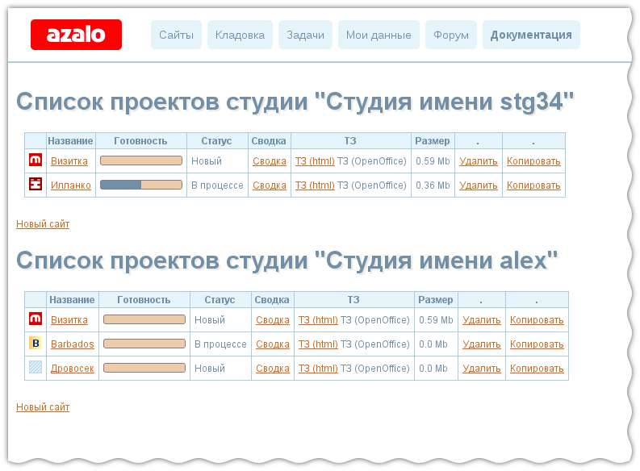
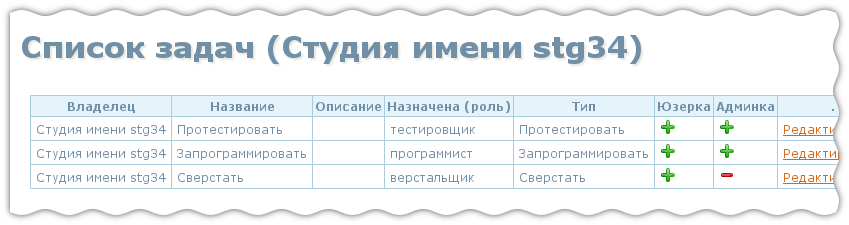

Azalo.net
Что такое Azalo.net?
Azalo.net - это сервис, который позволяет формализовать, визуализировать и автоматизировать типовые процедуры, которые проходят заказчик и команда разработчиков при создании сайта. Например, нарисовать и обсудить схему сайта, подгоовить техническое задание, оценить время на разработку.
Термины и определения
- Проект
- описание, модель сайта
- Компонент
- типовой, самодостаточный (логически законченный) фрагмент сайта. Например “Новости” - встречаются на большей части сайтов, состоит из странички с недавними новостями, страницы с одной новостью, архивом новостей, и соответствующим набором страниц в админской части сайта. Примеры других компонентов сайта: «форма обратной связи», «каталог», «форум» и т. д.
- Дизайн страницы
- набор файлов, описывающих внешний вид одной страницы.
- Исходник дизайна
- графический файл (.psd, .ai, .cdr, .xcf, …) содержащий дизайн данной страницы и пригодный для передачи верстальщику. Примечание: одну страницу сайта может описывать несколько файлов.
- Изображение
- графический файл (jpeg, png, gif), соответствующий исходнику дизайна страницы, но необходимый, не для верстальщика, а скорее, для удобного ознакомления заказчика с видом станицы, без необходимости просматривать макет в Photoshop или CorelDraw. Иными словами изображение есть экспорт исходника в один из популярных графических форматов.
- Структура сайта
- древовидная иерархия страниц сайта. Связи между страницами соответствую ссылкам между страницами, но не все ссылки между страницами соответствуют связям в структуре сайта. Связи в дереве, скорее отражают логическую организацию сайта, нежели отражают все ссылки между страницами.
- Дубликат дизайна
- Некоторые страницы сайта могут иметь дизайн совпадающий с какой-либо другой страницей. Страница повторяющая дизайн другой страницы — дублер дизайна.
- Дубликат функционала
- Аналогично
- Задачи
- список задач, которые отражают набор типовых действий выполняемых разработчиком или разработчиками для изготовления определённой части сайта.
- Структура данных
- Набор данных описывающих определенную сущность в модели сайта. Например сущность "Новость" -
ей соответсвует структура из следующих данных, определяемых парами название данных и тип:
- Название новости - строка (string)
- Текст новости - текст (text)
- Время публикации - время и дата (datetime)
- Валидатор
- это некое условие (условия) которое определяет корректность вводимых пользователем данных. Например проверка, того что, если пользователя просят указать e-mail, он вводит не бессмылсенные символы, а что-то похожее e-mail
- Пользователь
- Пользователь этого сервиса. Каждый пользователь является участником, как минимум одной студии (см. ниже)
- Студия
- Студия, сущность с которой связаны проекты. Т.е. владельцем проетка является не пользователь, а студия в которой сосотит пользователь.
Краткий обзор Azalo.net
Главное меню
- Сайты - переход на страницу со списком проектов.
- Кладовка - хранилище различных заготовок для работы. Например компоненты, валидаторы, определения и т.д. Т.е. те части которые могут быть использованы в различных проектах.
- Задачи - заготовки задач, которые будут добавлены в систему управления проектами.
- Мои данные - информация о пользователе, приглашения на сайт и в студию.
- Форум - место где можно обсудить вопросы и проблемы каксающиеся работы сервиса.
- Документация - ссылка на то, что вы сейчас читаете.
Основные страницы
Список проектов
Данная страница содержит список проектов к которым пользователь имеет отношение. Т.к. пользователь может иметь отношение к проектам принадлежащим разным студиям, то список содержащий проекты разбит на части. Вначале идет имя студии, ниже список проектов.
Данная схема разбиения на студии будет встречаться на многих других страницах, и там уже описываться не будет.
Из тех столбцов, которые пристутвуют в таблице особо хотелось бы отметить три:
1. Первый столбей - фавиконка сайта. Если она не загружена - будет отображаться
квадратик со штриховкой.
2. ТЗ - это автоматически сгенерированное техзадание. Его качество и наполнение
напрямую завиисят от того насколько детально проработан проект. Чем больше
деталей будет указано, тем полнее будет ТЗ.
3. Сводка - это оценка времени на создание проекта, и пока, этот пункт следует игнорировать :)
Проект
Пожалуй наиболее важная страница, на которой происходит большинство операций при работе над проектом.
Особенности пользовательского интерфейса. Все квадратики страниц (картинка) — тултипы, на них можно навести мышку и подождать. Что-то появится.

Эта страница имеет несколько режимов просмотра, каждый из которых более удобен для определенного вида работы. В одном случае удобнее работать с дизайном, в другом с данными
Страница будет рассмотрена в деталях в следующей части.
Список компонентов и компонент
Эти страницы подобны списку проектов и проекту, но несколько проще. Принципиальных отличий между ними нет.
Задачи
Список задач, который будет создан в Redmine при нажатии на "Создать задачи" рядом с "коробкой" старницы.
Задачи могут быть применимы к страницам админки, юзерки или туда и туда.
Задача
Задача имеет один из типов:
- Обычная - все параметры задачи выставляются вручную
- Запрограммировать - для этой и последующих задач параметры определяются автоматически
- Сверстать
- Протестировать
- Принять
Настройки
В этом разделе собраны различные данные:
- работники студии
- список структур и валидаторов
- текстовые заготовки для техзаданий
Мои данные
В этом разделе отображается информация о пользователе, приглашенных им пользователях. В этом разделе, также, можно пригласить других пользователей на сайт или на работу к себе в студию.
Содержание